.svg)
This study compares 4 differents video encoders, AOM AV1, Google VP9, x264 and x265. We use five algorithms in order to compare each format:
The video set is comprised of 30 videos from objective-1-fast by Xiph. All videos are YCbCr 4:2:0 Y4M files.
https://aomedia.googlesource.com/aom/. The versions used is built from GIT revision 7d3bd8daba6e51566f0458e3f842e246a559ea82 (february 2018).https://chromium.googlesource.com/webm/libvpx. The version used is 1.7.0.https://www.videolan.org/developers/x264.html. The version used is built from GIT revision 7d0ff22e8c96de126be9d3de4952edd6d1b75a8c.https://www.videolan.org/developers/x265.html. The version used is built from GIT revision 3cf3839f82bb177c43449ab10792c184c4485d8b.The VMAF (Video Multi-Method Assessment Fusion) metric is computed using vmafossexec, provided by Netflix: https://github.com/Netflix/vmaf. The version used is built from GIT revision 7ebbde0c64493af978da66cb7ebe2946fb12dec2.
vmafossexec compares two YUV files, given their subsampling and dimensions.
Y-MSSIM, Y-SSIM, RGB-SSIM and PNSR-HVS-M are computed by the tools dump_msssim, dump_ssim and dump_psnrhvs, provided by the Daala repository: https://git.xiph.org/?p=daala.git. The version used is built from GIT revision 05243557bc3e59872fd043c99dc4c17ca33bcb1b.
Each metric compares two Y4M files.
ffmpeg is used for video formats conversion. The version used is ffmpeg 3.3.5.ffprobe is used to determine the width, height and number of frames of the videos.Each Y4M videos is exported to 4:2:0 10 bits Y4M with FFMPEG:
ffmpeg -y -i [input] -pix_fmt yuv420p10le -strict -1 [output]
All videos are compressed over a range of qualities for each encoder:
AV1:
aomenc --cpu-used=2 --tile-columns=4 --passes=2 --pass=1 --bit-depth=10 --input-bit-depth=10 --end-usage=q --cq-level=$q --fpf=[output].log -o [output] [input(Y4M_10bits)]
aomenc --cpu-used=2 --tile-columns=4 --passes=2 --pass=2 --bit-depth=10 --input-bit-depth=10 --end-usage=q --cq-level=$q --fpf=[output].log -o [output] [input(Y4M_10bits)]
VP9:
vpxenc --tile-columns=4 --row-mt=1 --passes=2 --cpu-used=2 --bit-depth=10 --input-bit-depth=10 --profile=2 --end-usage=q --cq-level=$ -o [output] [input(Y4M_10bits)]
x264:
x264 --profile high10 --preset slower --input-depth=10 --output-depth=10 --crf $q -o [output] [input(Y4M_10bits)]
x265:
x265 --profile main10 --preset slower --input-depth=10 --output-depth=10 --crf $q -o [output] [input(Y4M_10bits)]
The Python script used to generate the compressed videos are available on the GIT repository.
For each codec and videos, the encoding and decoding duration are mesured using Python timeit. It is then converted in frames per minute.
For each codec and videos, we apply the following metrics, Y-SSIM, RGB-SSIM, Y-MSSSIM, PSNR-HVS-M and VMAF, over samples of increasing quality. For VMAF, we use the trained model vmaf_v0.6.1.pkl given by Netflix.
For each sample, we first decode the compressed videos to 4:2:0 10bits Y4M then export to YUV format using FFMPEG (ffmpeg -y -i [input] -pix_fmt yuv420p10le -strict -1 [output]). Finally we apply the metrics over each sample, comparing it to the original video.
For each codec, we calculate the arithmetic mean of each metric over the entire set of videos, weighted by the number of pixels of the corresponding video, for the samples of increasing quality:
We also determine the average bits per pixel for each quality sample:
The following archives contain the raw data in csv format for objective-1-fast:
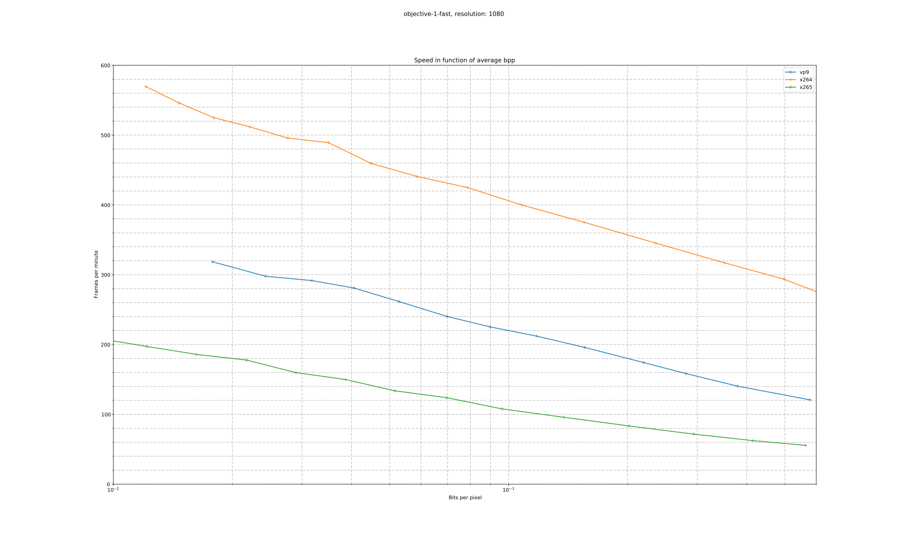
For each comparison algorithms, we plot the quality in dB in function of the mean bits per pixel on a logarithmic scale. We can then visualize which codec gives the best quality at a given bit per pixel (top left is better).
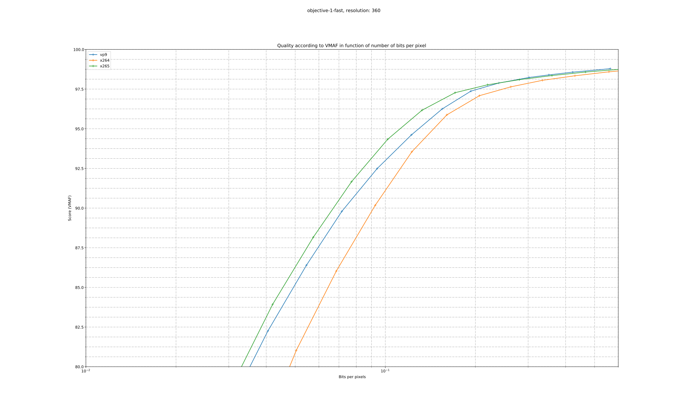
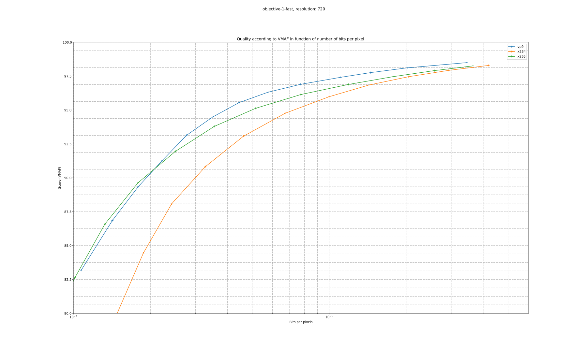
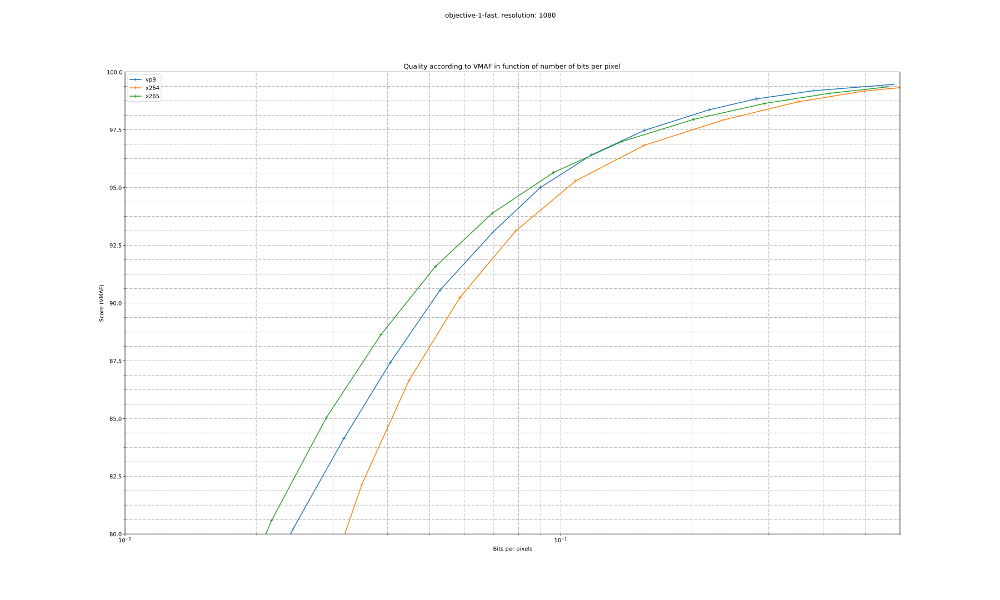
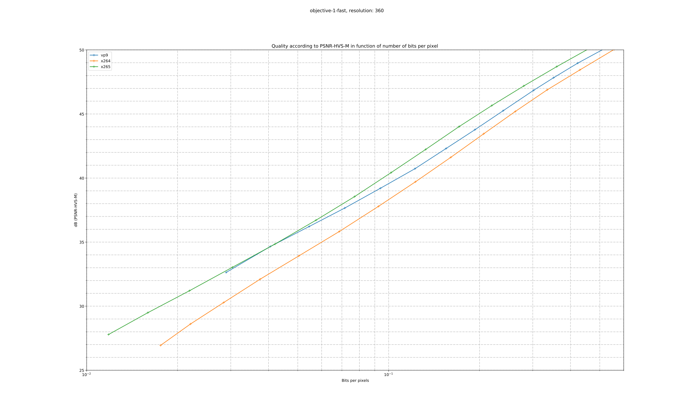
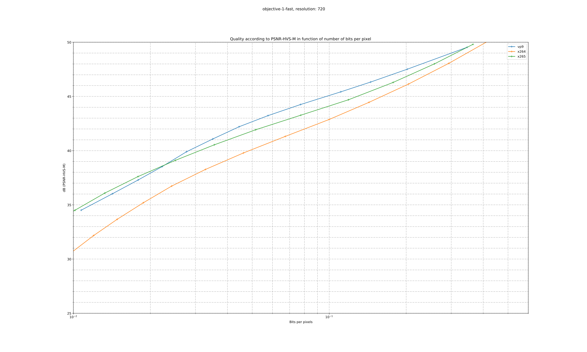
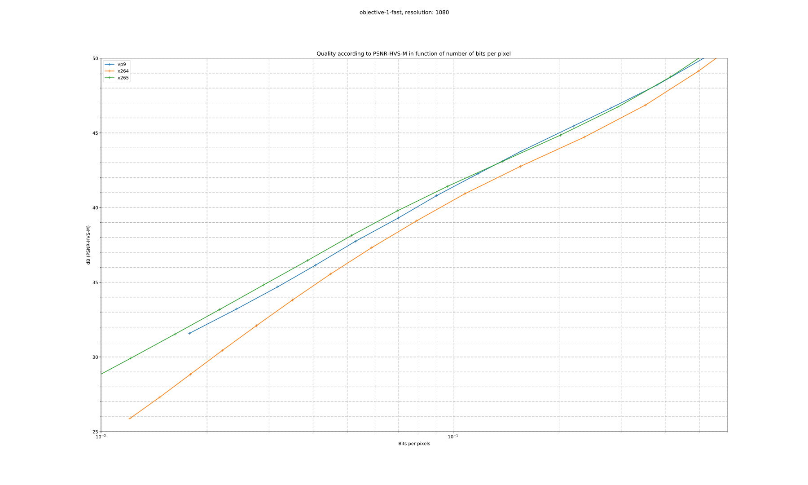
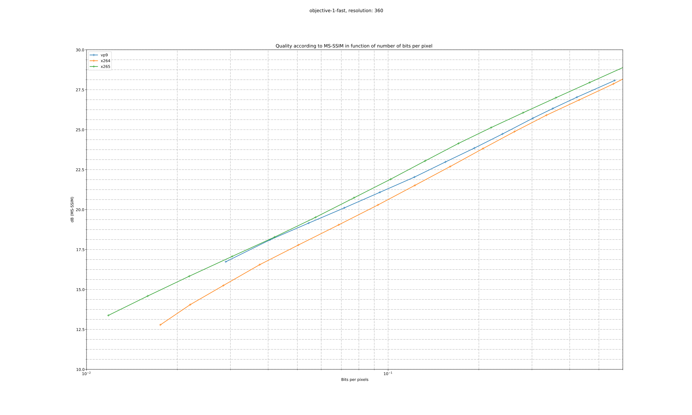
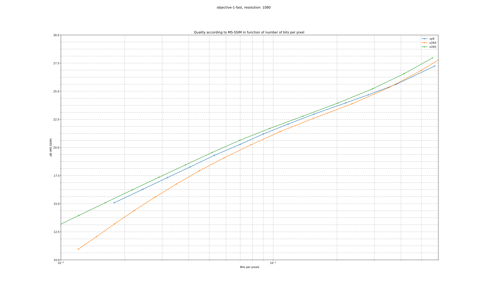
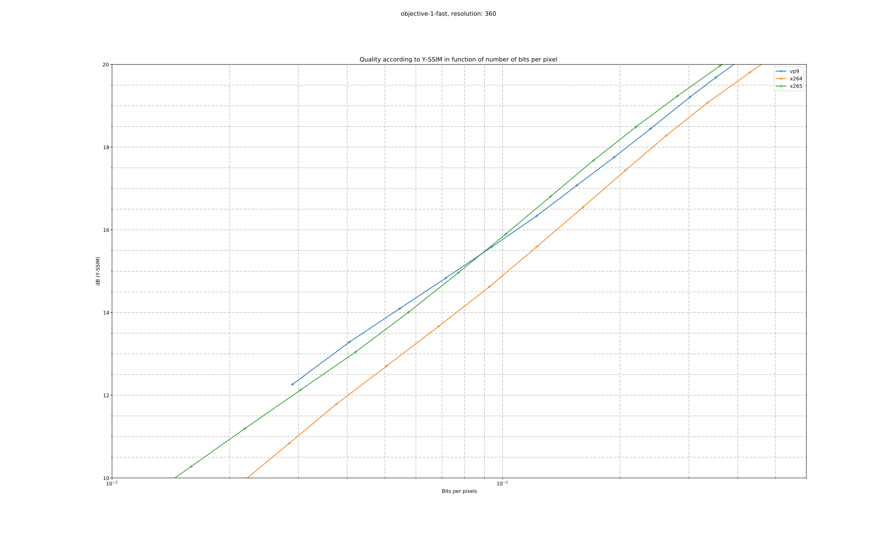
.svg)
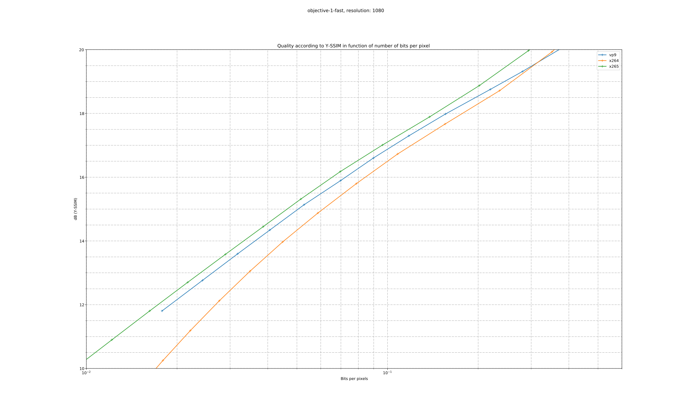
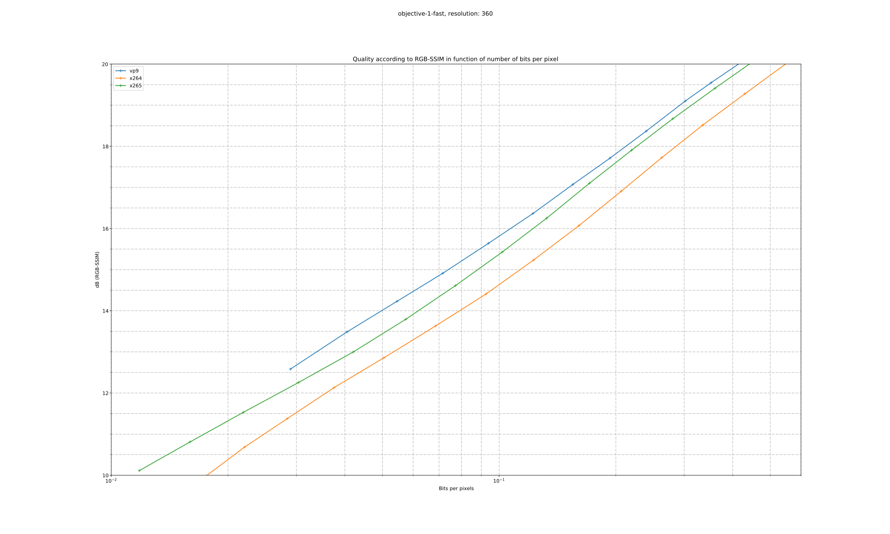
.svg)
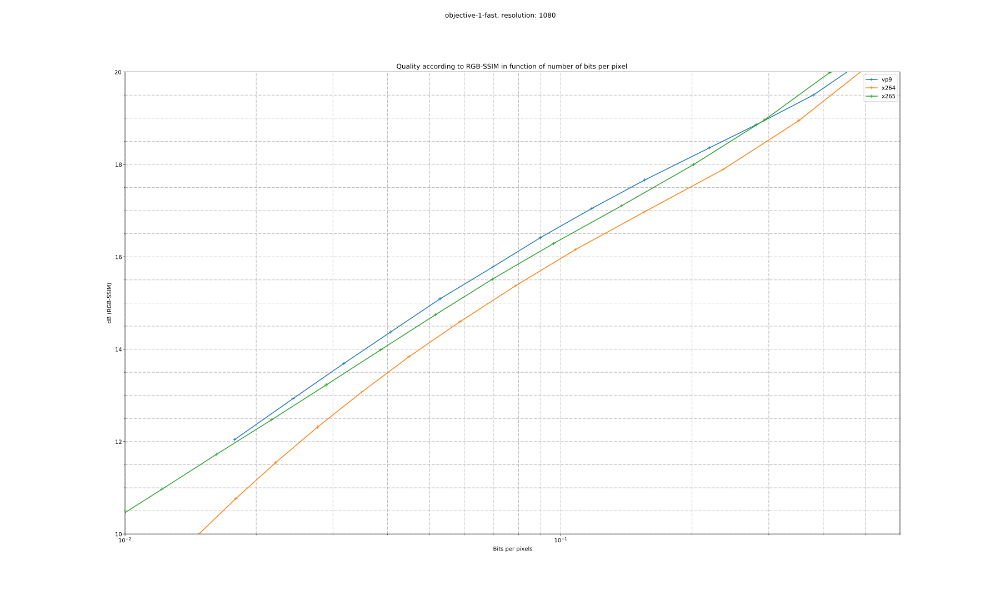
In the following table, we try to find equivalences between the CRF values of the various encoders according to a selected metric. We then calculate the expected bitrate reduction for this comparable CRF value.
For example, a x264 encode at CRF 20 would give a PSNR-HVS-M of 42.80. To obtain the same quality with VP9, one should look at the intersection of CRF 20 and "vp9 crf according to psnr-hvs-m", which gives an equivent CRF of 30.60. The column "vp9 % reduction according to psnr-hvs-m" then gives the expected reduction of bitrate, -21.294%.
| x264 crf | x264 bpp | x264 y-ssim | x264 rgb-ssim | x264 ms-ssim | x264 psnr-hvs-m | x264 vmaf |
|---|---|---|---|---|---|---|
| 16 | 0.34558 | 19.90 | 18.92 | 25.30 | 46.84 | 98.52 |
| 17 | 0.28786 | 19.31 | 18.41 | 24.60 | 45.79 | 98.24 |
| 18 | 0.23879 | 18.76 | 17.92 | 23.92 | 44.77 | 97.90 |
| 19 | 0.19742 | 18.22 | 17.46 | 23.27 | 43.77 | 97.47 |
| 20 | 0.16285 | 17.71 | 17.01 | 22.64 | 42.80 | 96.93 |
| 21 | 0.13424 | 17.21 | 16.58 | 22.02 | 41.85 | 96.26 |
| 22 | 0.11082 | 16.72 | 16.16 | 21.42 | 40.92 | 95.44 |
| 23 | 0.09185 | 16.25 | 15.76 | 20.82 | 40.00 | 94.45 |
| 24 | 0.07667 | 15.79 | 15.36 | 20.23 | 39.09 | 93.28 |
| x264 crf | x264 bpp | vp9 crf according to y-ssim | vp9 bpp according to y-ssim | vp9 % reduction according to y-ssim | vp9 crf according to rgb-ssim | vp9 bpp according to rgb-ssim | vp9 % reduction according to rgb-ssim | vp9 crf according to ms-ssim | vp9 bpp according to ms-ssim | vp9 % reduction according to ms-ssim | vp9 crf according to psnr-hvs-m | vp9 bpp according to psnr-hvs-m | vp9 % reduction according to psnr-hvs-m | vp9 crf according to vmaf | vp9 bpp according to vmaf | vp9 % reduction according to vmaf |
|---|---|---|---|---|---|---|---|---|---|---|---|---|---|---|---|---|
| 16 | 0.34558 | 17.24 | 0.35864 | 3.781 | 19.86 | 0.28608 | -17.22 | 17.72 | 0.34382 | -0.5091 | 19.74 | 0.28910 | -16.342 | 21.09 | 0.25810 | -25.313 |
| 17 | 0.28786 | 20.23 | 0.27743 | -3.624 | 23.01 | 0.22063 | -23.36 | 20.56 | 0.26966 | -6.3231 | 22.46 | 0.23068 | -19.863 | 22.86 | 0.22338 | -22.399 |
| 18 | 0.23879 | 23.34 | 0.21501 | -9.959 | 26.16 | 0.17333 | -27.41 | 23.50 | 0.21215 | -11.1558 | 25.20 | 0.18615 | -22.044 | 24.87 | 0.19078 | -20.104 |
| 19 | 0.19742 | 26.46 | 0.16961 | -14.083 | 29.24 | 0.13995 | -29.11 | 26.47 | 0.16950 | -14.1388 | 27.92 | 0.15292 | -22.539 | 27.20 | 0.16086 | -18.518 |
| 20 | 0.16285 | 29.52 | 0.13732 | -15.674 | 32.20 | 0.11620 | -28.65 | 29.40 | 0.13848 | -14.9610 | 30.60 | 0.12817 | -21.294 | 29.81 | 0.13480 | -17.222 |
| 21 | 0.13424 | 32.50 | 0.11411 | -14.994 | 35.02 | 0.09860 | -26.55 | 32.26 | 0.11575 | -13.7742 | 33.22 | 0.10938 | -18.520 | 32.62 | 0.11328 | -15.612 |
| 22 | 0.11082 | 35.36 | 0.09672 | -12.720 | 37.70 | 0.08473 | -23.54 | 35.04 | 0.09850 | -11.1184 | 35.76 | 0.09454 | -14.691 | 35.48 | 0.09604 | -13.335 |
| 23 | 0.09185 | 38.09 | 0.08283 | -9.822 | 40.23 | 0.07305 | -20.47 | 37.72 | 0.08464 | -7.8535 | 38.23 | 0.08217 | -10.542 | 38.21 | 0.08225 | -10.452 |
| 24 | 0.07667 | 40.71 | 0.07096 | -7.441 | 42.63 | 0.06270 | -18.21 | 40.29 | 0.07278 | -5.0651 | 40.63 | 0.07128 | -7.030 | 40.66 | 0.07115 | -7.198 |
| x264 crf | x264 bpp | x265 crf according to y-ssim | x265 bpp according to y-ssim | x265 % reduction according to y-ssim | x265 crf according to rgb-ssim | x265 bpp according to rgb-ssim | x265 % reduction according to rgb-ssim | x265 crf according to ms-ssim | x265 bpp according to ms-ssim | x265 % reduction according to ms-ssim | x265 crf according to psnr-hvs-m | x265 bpp according to psnr-hvs-m | x265 % reduction according to psnr-hvs-m | x265 crf according to vmaf | x265 bpp according to vmaf | x265 % reduction according to vmaf |
|---|---|---|---|---|---|---|---|---|---|---|---|---|---|---|---|---|
| 16 | 0.34558 | 16.06 | 0.28855 | -16.50 | 16.05 | 0.28882 | -16.42 | 15.82 | 0.30066 | -13.00 | 15.86 | 0.29877 | -13.55 | 15.77 | 0.30335 | -12.2191 |
| 17 | 0.28786 | 17.19 | 0.23623 | -17.94 | 17.14 | 0.23831 | -17.21 | 16.95 | 0.24621 | -14.47 | 16.99 | 0.24444 | -15.08 | 16.39 | 0.27215 | -5.4580 |
| 18 | 0.23879 | 18.31 | 0.19272 | -19.29 | 18.21 | 0.19633 | -17.78 | 18.09 | 0.20075 | -15.93 | 18.13 | 0.19909 | -16.63 | 17.12 | 0.23895 | 0.0684 |
| 19 | 0.19742 | 19.43 | 0.15701 | -20.47 | 19.27 | 0.16172 | -18.08 | 19.22 | 0.16332 | -17.27 | 19.27 | 0.16174 | -18.07 | 18.00 | 0.20384 | 3.2567 |
| 20 | 0.16285 | 20.54 | 0.12802 | -21.39 | 20.31 | 0.13337 | -18.10 | 20.34 | 0.13284 | -18.43 | 20.40 | 0.13134 | -19.35 | 19.05 | 0.16826 | 3.3227 |
| 21 | 0.13424 | 21.63 | 0.10466 | -22.03 | 21.35 | 0.11027 | -17.86 | 21.45 | 0.10826 | -19.36 | 21.52 | 0.10685 | -20.40 | 20.27 | 0.13441 | 0.1243 |
| 22 | 0.11082 | 22.71 | 0.08599 | -22.41 | 22.36 | 0.09154 | -17.40 | 22.54 | 0.08861 | -20.05 | 22.63 | 0.08732 | -21.21 | 21.64 | 0.10453 | -5.6716 |
| 23 | 0.09185 | 23.78 | 0.07114 | -22.55 | 23.37 | 0.07642 | -16.80 | 23.64 | 0.07301 | -20.51 | 23.73 | 0.07185 | -21.77 | 23.11 | 0.08015 | -12.7386 |
| 24 | 0.07667 | 24.85 | 0.05939 | -22.54 | 24.38 | 0.06426 | -16.18 | 24.72 | 0.06071 | -20.82 | 24.82 | 0.05970 | -22.14 | 24.62 | 0.06167 | -19.5585 |